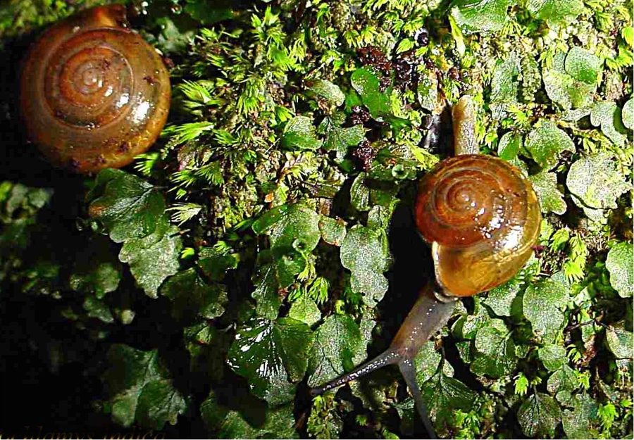

बगीचे का घोंघाIndian Land Snail
Macrochlamys indica · Ariophantidae · MOL-0005

- Scientific name
- Macrochlamys indica Godwin-Austen, 1883
- Family
- Ariophantidae
- Hindi
- बगीचे का घोंघा
- Status here
- native
- IUCN
- not evaluated
When to look कब देखें
Expected mainly in June, July, August, September, October, November.
बगीचे का घोंघा / Indian Land Snail
Macrochlamys indica Godwin-Austen, 1883 — Ariophantidae
बगीचे का घोंघा (इंडियन लैंड स्नेल) — पूर्वी उत्तर प्रदेश के बगीचों, गमलों के नीचे और नम ईंटों की दीवारों पर पाया जाने वाला एक अत्यंत सामान्य निवासी ज़मीनी घोंघा (terrestrial snail) है। यह मुख्य रूप से रात के समय सक्रिय (nocturnal) होता है और बरसात के मौसम (जून से अक्टूबर) में नमी बढ़ने पर बाहर निकलता है। इसका खोल (shell) चपटा, चिकना और चमकीला भूरा (glossy brown) होता है, जिस पर एक पीली-सफेद रंग की परिधीय पट्टी (pale peripheral band) दिखाई देती है। दिन के समय और गर्मियों के सूखे महीनों में यह नमी वाले स्थानों में छिप जाता है और अपने खोल के मुंह को एक सूखे बलगम की परत (epiphragm) से बंद करके निष्क्रिय अवस्था (estivation) में चला जाता है। यह सड़ी-गली पत्तियों और पौधों के कोमल हिस्सों को खाकर कार्बनिक कचरे को सड़ने में मदद करता है। जलीय घोंघों की तुलना में ज़मीनी घोंघों पर स्थानीय स्तर पर बहुत कम वैज्ञानिक अध्ययन किए गए हैं।
Quick Identification त्वरित पहचान
| Feature | Description |
|---|---|
| Shell Shape | Depressed, flattened-globose shell with 5–6 whorls; slightly convex dorsally |
| Shell Surface | Smooth, highly polished, and glossy translucent brown or amber-colored |
| Peripheral Band | A thin, pale yellowish-white band running along the peripheral edge of the shell |
| Body Colour | Soft, moist body, uniformly slate-grey or greyish-black |
| Tentacles | Two pairs of tentacles; upper pair is longer, bearing distinct black eyes at the tips |
| Operculum | Lacks a calcareous shell lid (operculum); seals shell opening with dried mucus |
Field tip: Look under damp flower pots, piles of wet bricks, or thick decaying leaf litter in gardens after a monsoon shower. Search for a small, flattened, glossy brownish shell. If you watch quietly, the snail will extend a long, greyish-black body with two pairs of tentacles, the upper pair bearing tiny black eyes at the tips.
Morphology आकारिकी
Biometrics (typical measurements for adult specimens in local gardens):
| Measurement | Range |
|---|---|
| Shell diameter | 14.0–20.0 mm |
| Shell height | 8.0–12.0 mm |
Body details: The shell is dextral (coiling to the right), depressed, and globose. The whorls increase rapidly in size, separated by narrow, distinct sutures. The shell opening (aperture) is wide and crescent-shaped. The shell is thin and translucent, allowing the dark mantle underneath to be partially visible. The living animal has a moist, slippery body. The head is distinct, featuring a longer upper pair of tentacles with eyes at the tips (ommatophores) and a shorter lower pair of sensory tentacles. The muscular crawling foot has a distinct caudal mucus gland at the rear tip.
Behaviour & Ecology व्यवहार और पारिस्थितिकी
Nocturnal land-crawler.
- Nocturnal foraging: Forages strictly after sunset or during heavy monsoon rain showers. It remains completely hidden under pots or mulch during the day to avoid solar desiccation.
- Estivation: During the dry winter and summer months (December–May) when humidity drops, the snail burrows slightly into loose soil or leaf litter. It withdraws its body into the shell and seals the opening with a thin, paper-like mucus sheet (epiphragm) to conserve moisture.
- Slime trail: Secretes a continuous trail of mucus from its foot to reduce friction and protect its soft body from rough ground surfaces.
Ecological Role पारिस्थितिक भूमिका
Terrestrial decomposer.
- Humus formation: Consumes decaying leaf matter, fungi, and organic soil detritus, helping decompose organic waste and enrich the soil.
- Food chain link: Serves as a significant prey item for insectivorous birds, ground lizards, and large beetles.
Life Cycle / Phenology जीवन चक्र
- Breeding: Mating takes place during the warm, wet months of July and August.
- Egg laying: Hermaphroditic. Both individuals exchange sperm during mating. They lay clutches of 20–50 round, translucent white, gelatinous eggs in damp soil or under decaying leaf litter.
- Development: Eggs hatch in 12–18 days. The young hatch with tiny, soft, transparent shells and reach maturity within 10–12 months, living for about 1–2 years.
Host Plants or Prey आहार
Diet: Herbivorous and detritivorous.
- Decaying matter: Fallen leaves of garden trees, compost debris, and wild mushrooms.
- Green plants: Tender shoots and leaves of garden plants (like marigolds, money plants, and soft ferns).
Predators / Natural Enemies शत्रु
- Birds: Jungle Babblers (such as [BRD-0035 Jungle Babbler]) and house crows search leaf litter for them.
- Reptiles: Common Keeled Skinks (such as [REP-0014 Common Keeled Skink]) consume them.
- Insects: Larvae of the Indian Firefly (such as [INS-0030 Indian Firefly]) are specialized predators that track slime trails to attack and feed on land snails.
Agricultural / Human Relevance कृषि प्रासंगिकता
Minor garden pest and study subject.
- Garden damage: Can chew clean holes in the leaves of delicate ornamental plants in Basti gardens during the wet season, but is rarely a pest of broad-acre field crops.
- Under-studied species: Unlike aquatic snails that carry human diseases, land snails are under-studied in eastern UP, presenting an excellent opportunity for high school biology projects.
- Management: Hand-picking snails from pots at night, placing dry ash barriers around beds, and encouraging natural predators like garden skinks.
Expected Locally स्थानीय रूप से अपेक्षित
Not a field record. Written from published accounts for eastern Uttar Pradesh. No confirmed local sighting yet — if you have seen it, that is what the atlas needs.
अभी तक स्थानीय पुष्टि नहीं। यह विवरण प्रकाशित स्रोतों से है, किसी अवलोकन से नहीं।
Commonly observed in Basti Sadar and Harraiya town gardens, plant nurseries (nursery), and damp brick yards. During monsoon nights, they are frequently seen climbing the exterior walls of houses, leaving silvery, dried mucus trails.
Distribution वितरण
Global range: Endemic to the Indian Subcontinent, distributed across India, Bangladesh, Nepal, and Sri Lanka.
In India: Widespread in all plains and peninsular zones with high seasonal rainfall.
In Uttar Pradesh: Resident in all districts, particularly in suburban home gardens.
In Basti district / eastern UP: Highly common in all town and village residential areas.
Research Questions शोध प्रश्न
Anyone can investigate these | कोई भी इन प्रश्नों की जाँच कर सकता है
- What is the average duration of summer estivation for Indian Land Snails in Basti gardens? / बस्ती के बगीचों में भारतीय ज़मीनी घोंघों की ग्रीष्मकालीन निष्क्रियता (summer estivation) की औसत अवधि क्या होती है? — Monitor marked snails in a garden box under seasonal shade.
- Does the Indian Land Snail prefer feeding on decaying leaves compared to fresh green leaves of marigolds? / क्या भारतीय ज़मीनी घोंघा गेंदे की ताज़ा हरी पत्तियों की तुलना में सड़ी-गली पत्तियों को खाना अधिक पसंद करता है? — Conduct leaf choice feeding trials in a terrarium.
- What is the crawling speed of the land snail on different surfaces like brick, glass, and loose soil? — Time crawling speeds over set distances of 20 cm.
- How does the presence of predatory firefly larvae affect the survival of land snail populations in garden beds? — Monitor snail density in plots with different counts of firefly larvae.
- Can children count how many land snails they can find under five different flower pots after an evening rain shower? — A simple hands-on survey activity.
Similar Species मिलती-जुलती प्रजातियाँ
| Species | Key Difference | हिंदी |
|---|---|---|
| Achatina fulica (Giant African Snail) | Much larger (70–120 mm); elongated, conical, striped shell; highly destructive invasive pest | विशाल अफ्रीकी घोंघा — बहुत बड़ा शंक्वाकार खोल |
| [MOL-0004 Ramshorn Snail] (Indoplanorbis exustus) | Aquatic; flat, sinistral coiled shell; lives in ponds; lacks eyes on tentacle tips | चपटा घोंघा — पानी में रहने वाला, चक्राकार खोल |
| Glessula gemma (Spire Land Snail) | Terrestrial; shell is highly elongated, narrow, and cone-shaped; smaller shell diameter | शंक्वाकार ज़मीनी घोंघा — शंक्वाकार खोल |
Field rule: Terrestrial habit, flattened glossy brown shell (~14–20 mm) with a pale peripheral band, and eyes situated at the tips of the upper tentacles identify the Indian Land Snail.
Taxonomy & Classification वर्गीकरण
Original description. Henry Haversham Godwin-Austen described the Indian Land Snail as Macrochlamys indica in 1883 in Land and Freshwater Mollusca of India (Vol. 1, Part 3, p. 115). The type locality was Calcutta, India. The genus name Macrochlamys combines the Greek makros (large) and chlamys (cloak/mantle), referring to the large mantle lobes that can cover parts of the shell. The specific name indica refers to India.
Subspecies. Monotypic — no subspecies are currently recognized.
Family and order placement. Placed in the order Stylommatophora, suborder Helicina, family Ariophantidae, subfamily Ariophantinae.
Phylogenetic notes. Macrochlamys indica belongs to the family Ariophantidae, representing a diverse South Asian radiation of land snails that developed specialized mantle lobes and caudal mucous glands to adapt to seasonal monsoon climates.
IUCN status rationale. Not evaluated (NE) by the IUCN Red List. It is common and highly abundant, with no immediate conservation threats.
Photo Gallery फोटो गैलरी
References संदर्भ
- Godwin-Austen, H. H. (1883). Land and Freshwater Mollusca of India, including South Arabia, Baluchistan, Afghanistan, Kashmir, Nepal, Burmah, Pegu, Tenasserim, Malay Peninsula, Ceylon, and other islands of the Indian Ocean. Vol. 1, Part 3. London: Taylor and Francis, p. 115. [original description]
- Blanford, W. T., & Godwin-Austen, H. H. (1908). The Fauna of British India, including Ceylon and Burma. Mollusca. Testacellidae and Zonitidae. Taylor and Francis, London, p. 81.
- Ramakrishna, Mitra, S. C., & Dey, A. (2010). Annotated Checklist of Indian Land Mollusca. Records of the Zoological Survey of India, Occasional Paper No. 306.
- Raut, S. K., & Ghose, K. C. (1984). Pest status of the land snail Macrochlamys indica Godwin-Austen. Proceedings of the Zoological Society of Calcutta, 37, 75-79.
- ZSI Checklist — Terrestrial Mollusca of Uttar Pradesh (2014).
- GBIF Occurrence Data — Macrochlamys indica, Uttar Pradesh (2010–2025).
Source file: species/fauna/mollusks/indian_land_snail.md